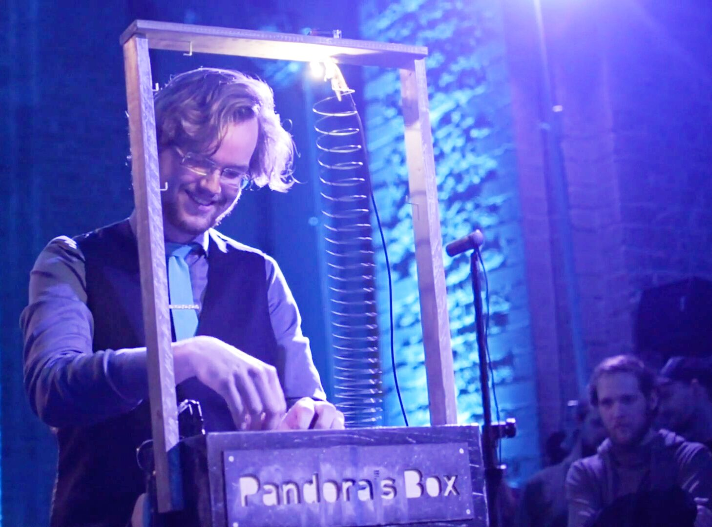
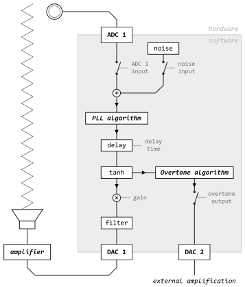
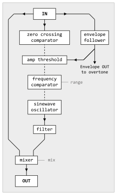
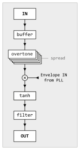
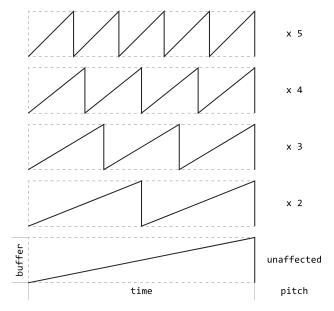
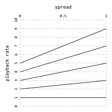
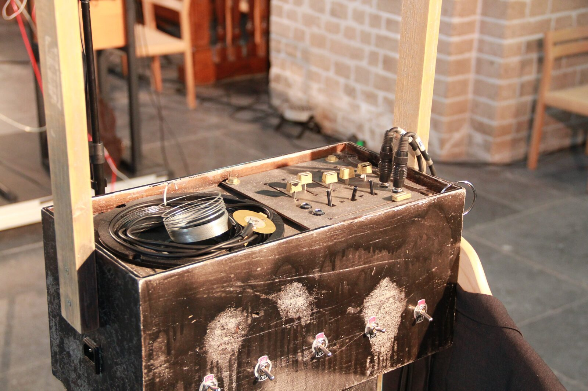
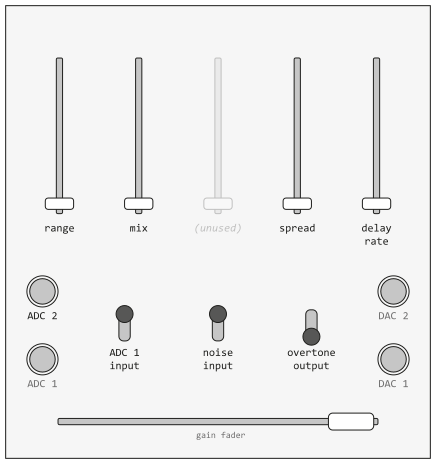

Designing and performing with Pandora's Box: transforming feedback physically and with algorithms
ABSTRACT
This paper discusses Pandora's Box, a novel idiosyncratic electroacoustic instrument and performance utilizing feedback as sound generation principle. The instrument's signal path consists of a closed-loop through custom DSP algorithms and a spring. Pandora's Box is played by tactile interaction with the spring and a control panel with faders and switches. The design and implementation are described and rituals are explained referencing a video recording of a concert.
Author Keywords
New interface for musical expression, instrument design, live performance instrument, positive feedback, embedded hardware, Bela
CCS Concepts
•Applied computing → Sound and music computing; Performing arts;
Introduction
“The Larsen effect happens when—given sufficient amplification—the sound captured from a microphone connected to a speaker is reproduced and again captured, recursively, resulting in a positive feedback that produces pitched tones from the iterated amplification of a signal.” [1]
Feedback in music
Different approaches to the use of feedback within music have been explored since the 1960s. Well-known examples are John Cage (Electronic Music for Piano, 1964), Steve Reich (Pendulum Music, 1968), and Jimi Hendrix. [2]
Halldór Úlfarsson's Halldorophone utilizes multiple feedback paths in a ‘‘cello-like drone instrument’’ and can be categorized as an augmented instrument as many playing methods from existing string instruments are inherited but new playing techniques are added. [3]
Toshimaru Nakamura improvises with no-input mixing boards utilizing feedback with electronics. A mixer and some audio effects are connected together creating a closed signal path where sound originates from the artifacts of the system's components. [4] In this nondeterministic system small changes in parameters can result in widely different sounds. Pandora's Box, however, is a system with determined interaction and thus performing can be learned.
Pandora's Box


Figure 1
The author performing with Pandora's Box.
Pandora's Box is an idiosyncratic single-purpose instrument and has been designed with a single concert in mind. The concept of the instrument has been derived from an earlier instrument called Springlevend. [5]
The feedback loop through the instrument is affected both by physics and DSP. Vibrations from the spring are picked up by a piezo microphone and analyzed by an algorithm controlling an oscillator. The oscillator is output via a speaker setting the spring in motion. With direct control over parameters like the oscillator range and delay time the seemingly unstable feedback can be guided to specific frequencies and sounds. The instrument is played by physically interacting with the spring, manipulating the toggles controlling signal flow and the faders mapped to parameters of the algorithm.
A secondary signal is derived from the algorithm’s output, processed with a custom pitch shifting algorithm and spatialized with an octophonic speaker setup. This signal adds contrasting texture to the very local and aggressive sound of the feedback through the spring.
Methodology
Springlevend, a previous iteration of Pandora’s Box, consisted of a spring glued to a speaker, a piezo microphone on a clothespin, a bass fuzz pedal and an amplifier. [5] Performing with this instrument led me to several conclusions:
I found the physical interaction with feedback through the spring fun to perform with and received positive reactions about the visibility of interaction with sound.
I found the mix of two contrasting signals in the feedback path, one with a strong low end and one with a very distorted noisy high end, capable of creating interesting sounds.
Hauling around a lot of gear and cables to be able to perform with Springlevend was cumbersome. The instrument could be improved by making it self-contained.
These conclusions led to the creation of Pandora's Box. The core DSP algorithm replacing the guitar pedal was inspired by a paper about the usage of Phase-Locked Loops for pitch tracking. [6]
Signal path


Figure 2
Overview of the signal path of Pandora's box.
The signal path is based on a continuous cycle of sound being transformed physically and with DSP and fed back into the start of the signal path again (Figure 2). Physically the sound is transformed by the characteristics of the speaker, the spring and the piezo.
The PLL algorithm
The PLL algorithm (Figure 3) tracks the pitch of the incoming signal by counting the time in between zero crossings and uses this to control a sine wave oscillator. The envelope follower is used as a threshold to ignore zero-crossings while the audio signal is not loud enough. If a zero crossing is detected, the time since the last zero-crossing is counted and the oscillator frequency is adjusted. The range parameter sets the maximum frequency of the oscillator: the counted frequency is compared against the range and is lowered by an octave until it no longer exceeds the range.


Figure 3
The PLL algorithm.
White noise can also be added into the feedback loop (Figure 2) which, due to its high density of zero crossings, will make the PLL oscillator output a noise-like signal. Constraining this ‘frequency’ with the range slider allows the performer to play a relatively stable pitch. (4:55 - 5:00) [7]
Delay


Figure 4
The signal path of buffer overtone algorithm.
The signal is fed into a delay line with a delay time ranging from 5 samples up to a maximum of 3 seconds. The delay time is controlled by a fader and changes in value are smoothed with a rise time of 453 ms and a fall time of 113 ms resulting in pitch sweeps. [8]
The buffer overtone algorithm


Figure 5
The buffer read indices for each overtone compared to the read index while range = 0.
The purpose of the buffer overtone algorithm (Figure 4) is to add a contrasting layer to the distorted sounds circulating in the closed feedback loop. The overtone algorithm processes the signal tapped from the feedback loop and sends it to DAC2. During the concert [7] DAC2 was connected to a computer running a Max/MSP patch spatializing the signal over 8 channels by randomly changing the gains of each speaker. The overtone algorithm which is derived from time-domain pitch-shifting [9] generates 5 overtones of the PLL signal (Figure 5).


Figure 6
The playback rate of each individual overtone affected by the spread parameter.
The spread parameter determines the pitch shift of the 5 overtones and allows morphing from a pitch shift to every harmonic to a pitch shift every uneven harmonic (Figure 6). Each individual overtone is gated by its own toggle and multiplied by the PLL envelope.
Post processing
At different points in the signal path filters and tanh distortion is used to shape and constrain the signal. Audio sent to the outputs is filtered to remove DC offsets and to compensate for the harsh frequency response of the speaker.
Hardware
Due to portability requirements all electronics are mounted within the speaker cabinet. All DSP is done on a Bela in C++ allowing for a feedback loop of half a millisecond. [10]


Figure 7
The instrument seen from the performer’s perspective.
The instrument's appearance mirrors its sounds: a mix between polished and rough. The reused speaker cabinet is spray-painted black and the wooden frame is painted gold which has been sanded off partially (Figure 7).
The top side of the instrument has on its left side the speaker with the spring and on the right side the control panel (Figure 8). The side facing the performer has 5 toggles to gate the individual overtones (Figure 7).


Figure 8
The top control panel next to the speaker.
The output gain fader can be used to quickly increase or decrease the feedback intensity. A horizontally mounted 100mm fader slides smoothly and allows for expressive movements. The switches on the top panel have little resistance but still feel firm and can be used to play gating rhythms.
The piezo can be used to pick up sounds from the spring or can also be excited by touching it or rubbing it on the wooden frame. I find myself mostly playing with the piezo mounted at the end of the spring: sound travels from the speaker to the piezo microphone through the spring and the feedback loop is closed.
Pandora’s Box as performance
Performances played with Pandora’s Box are improvised but follow two principles.
Metaphorically Pandora’s Box opens halfway through the performance. At this point I open the overtone output gate (Figure 8). Then sound is not constrained by the built-in speaker anymore and is spatialized in the surrounding space. (5:30) [7]
I wear a three-piece suit on stage. To signify the start of the performance I take of my jacket and put it on the coat hanger on the side of the instrument. Near the end of the performance (10:59) I put on my jacket again, signifying the end. [7]
Conclusions
Evaluating and reiterating upon a previous instrument led to an idiosyncratic instrument and performance called Pandora's Box. This new iteration is self-contained, portable and the new DSP section in the signal path is found to be capable of creating a wide range of sounds without relying on a high number of parameters.
Citations
- ↩Boner, C. P., & Boner, C. R. (1966). Behavior of Sound System Response Immediately Below Feedback. J. Audio Eng. Soc, 14(3), 200–203.
- Sanfilippo, D., & Valle, A. (2013). Feedback Systems: An Analytical Framework. Computer Music Journal, 37(2), 12–27.
↩ - ↩Úlfarsson, H. (2018). The halldorophone: The ongoing innovation of a cello-like drone instrument. In Proceedings of the International Conference on New Interfaces for Musical Expression.
- Improvised Music from Japan. (2014). Toshimaru Nakamura: Profile.
http://www.japanimprov.com/tnakamura/profile.html (accessed May 25, 2020)
↩ - Slager, W. J. (2018). Springlevend.
https://wardslager.com/music/springlevend (accessed May 25, 2020)
↩ - ↩Böhler, J., & Zölzer, U. (2016). Monophonic pitch detection by evaluation of individually parameterized phase locked loops. In Proceedings of the 19th International Conference on Digital Audio Effects.
- Slager, W. J. (2020). Pandora’s Box.
https://wardslager.com/music/pandora (accessed June 5, 2020)
↩ - ↩Puckette, M. (2007). The Theory and Technique of Electronic Music (pp. 196–201). World Scientific Press.
- ↩Puckette, M. (2007). The Theory and Technique of Electronic Music (pp. 202–204). World Scientific Press.
- ↩McPherson, A., & Zappi, V. (2015). An environment for submillisecond-latency audio and sensor processing on BeagleBone Black. In Audio Engineering Society Convention 138.